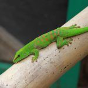
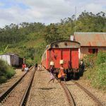
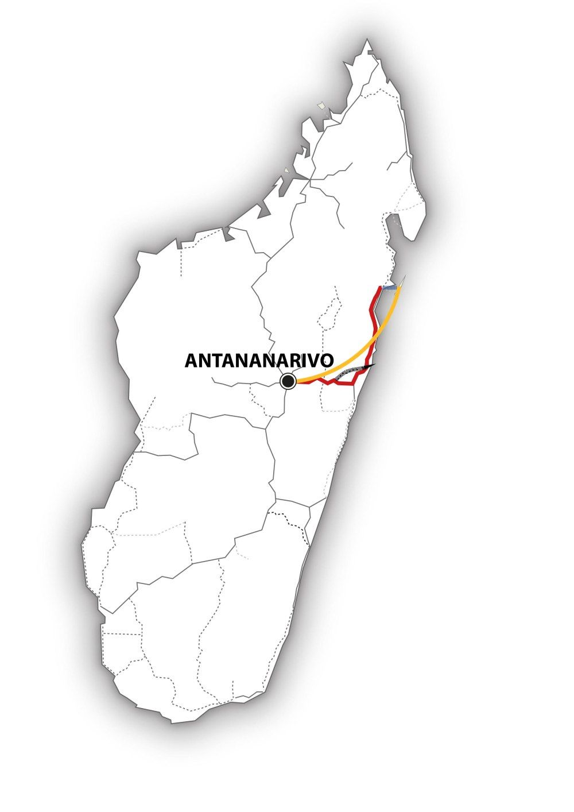

Madagascar – Mettez-vous au vert ! – MG110
Sur l’une des plus anciennes lignes de chemin de fer encore existantes à Madagascar, vous ferez l’expérience d’un trajet en train à la malgache …
Ambiance garantie : contact avec les Malgaches toujours ouverts et hospitaliers, aussi bien dans le train qu’au passage des villages en plein cœur de la forêt tropicale !
Mettez-vous littéralement au vert, en vous laissant porter par la variété des paysages : forêt tropicale luxuriante où nous observons dans leur habitat naturel caméléons, geckos et lémuriens les plus divers… Nous nous dirigeons ensuite vers l’idyllique île Sainte-Marie, aux plages bordées de palmiers et fameux repaire historique de pirates…
-

-

MG110 : Madagascar – Mettez-vous au vert !
L’essentiel : 
• Exploration attentive de la nature malgache et de ses
incroyables lémuriens
• Voyage en train à travers la forêt tropicale
• Détente à l’ombre des palmiers, sur les plages de sable fin
bordées par l’Océan Indien.
Période :
Ce circuit est réalisable d’avril à décembre.
Itinéraire :
Antananarivo – Moramanga – Brickaville – Andasibe – Tamatave – Soanierana Ivongo – Ste-Marie– Antananarivo
Caractéristiques du circuit :
Région : Hauts-Plateaux et Côte Est
Contenu : nature, culture et plage
Condition physique . moyenne
Tous les détails de ce voyage au format PDF
Jour 1 : Vol depuis la Suisse
Tonga Soa ! A notre arrivée, un chauffeur nous accueille et nous emmène à l’hôtel.
Jour 2 : Antananarivo – Moramanga
Laissons derrière nous la capitale Antananarivo, située sur les hauts-plateaux de l’île, et prenons la route de l’Est, en direction du port de Tamatave. La route serpente élégamment entre collines et rizières, puis se borde de vert de plus en plus profond. Nous voici arrivés à Moramanga «là où les mangues sont bon marché ».
Jour 3 : Moramanga – Trajet en train – Brickaville – Andasibe
Tamtam, ratatatam… le train de voyageurs se met en route. A chaque arrêt, les villageois se précipitent avec des fruits ou des aliments cuits sur les quais, tendus à bout de bras, pour faire envie aux voyageurs ! Ayons suffisamment de monnaie en poche, sinon nous risquons de rater ces magnifiques bananes ranjaly fraîchement cueillies, et qui nous sont tendues avec un grand sourire par ce petit garçon ! A Brickaville, terminus pour nous ! Notre chauffeur nous ramène à Andasibe, pour visiter les presque 16 000 ha de forêt tropicale dense humide du Parc National de Mantadia.
Jour 4 : Andasibe
Entourés de tous les tons de verts, une piste en terre nous amène à l’entrée du Parc. A l’aide de notre guide, nous observons quelques-unes des nombreuses espèces de lémuriens qui vivent ici dans leur habitat naturel. Le Parc abrite également de nombreux oiseaux, des caméléons, des geckos de jour ou encore de minuscules grenouilles. Sans oublier les crocodiles et encore d’autres lémuriens endémiques à observer sur les petites îles du Vakona Lodge non loin de là…
Jour 5 : Andasibe
Au cours de notre randonnée à travers la réserve tropicale voisine d’Analamazaotra, voici le fameux Indri, le plus grand des lémuriens, au cri si puissant…Sans oublier de nombreuses plantes tropicales – et d’autres que nous pourrons admirer au parc des Orchidées. Le soir venu, un circuit nocturne nous attend… Et là, vous avez vu ? qu’y a-t-il au creux de cet arbre ? Des yeux brillent à la lumière de nos lampes de poche… Oh, ce tout petit microcèbe est sans aucun doute le plus mignon des animaux nocturnes !
Jour 6 : Andasibe – Tamatave
Départ à destination de Tamatave, le plus important port de Madagascar. De nombreuses marchandises y transitent, dont les précieuses épices comme la vanille, le girofle, la cannelle ou le poivre, en attente de leur expédition dans le monde entier… Laissons-nous guider par les délicieux effluves exotiques d’une balade au marché aux épices de la ville… Mmmh, cela sent si bon !
Jour 7 : Tamatave – Soanierana Ivongo -Sainte-Marie
Un départ – presque – à la mode malgache : en minibus, nous longeons la côte en direction du Nord. En cours de route, nous observons la vie quotidienne des villages : ici l’on cuisine, là on travaille au champ, et voici des enfants qui gardent le bétail ! Sans compter les poules qui traversent la route à tout moment… A Soanierana Ivongo (pas facile à dire avec toutes ces lettres !), un bateau nous emmène au large, à destination de l’île Ste-Marie.
Jour 8 : Sainte-Marie
Bienvenue au Paradis ! Plages de sable blanc quasi-désertes, ombre nonchalante des palmiers caressés par le vent, eaux chaudes de l’Océan Indien… Ici, protégé par la barrière de corail environnante, c’est le royaume des poissons de toutes les couleurs et de toutes les formes… Et les pêcheurs le savent bien ! Regardez-les lancer leurs filets, dans ce geste ancestral et gracieux, mille fois répété…
Jour 9 : Sainte-Marie
Immergeons-nous dans l’activité colorée du marché de la ville principale de Ste Marie ! On y trouve de tout : du panier tressé (la fameuse sobika !) au balai confectionné à la main, sans oublier les panneaux solaires « made in China ». Le tout baignant dans cette envoûtante odeur de clous de girofle en train de sécher sur des nattes à même le sol… Aventuriers, une visite au cimetière des pirates s’impose, là où reposent certains des plus redoutables compagnons de l’ancienne République pirate de Libertalia…
Jour 10 : Sainte-Marie
Fatigués de nature et de découvertes ? Alors, dites oui à cette chaise longue qui vous tend les bras, admirez la mer, et laissez-vous happer par les derniers rayons du soleil qui se couche sur Madagascar…
Jour 11 : Sainte-Marie – Antananarivo
Ah, les zébus quittent la piste ! Signe que l’avion qui nous ramène à Antananarivo atterrit !!
Jour 12 : Antananarivo
Aujourd’hui, la capitale de Madagascar a décidé de nous dévoiler ses charmes… Balade dans ses rues étroites et dans ses vieux quartiers, sans oublier la visite de l’une des 12 collines sacrées, avec une vue imprenable sur la métropole.
Jour 13 : Antananarivo
Voici venu notre dernier jour de voyage à Madagascar… Nous avons le temps de faire encore quelques achats, de visiter le marché artisanal, ou simplement nous reposer à l’hôtel… Le soir venu, nous partons pour l’aéroport.